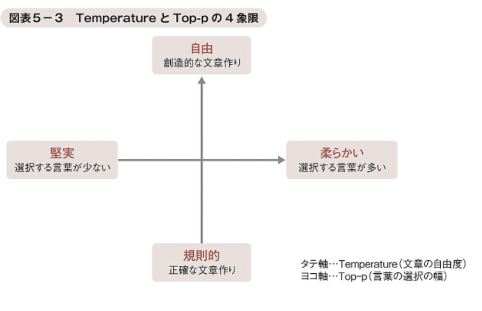

LM・LLMの仕組み
1 言語モデルのLM・LLMってなに？
言語モデルは「ある言葉の次に来る言葉の確率」を予測するしくみです。 LMはその基本版で、LLMは大規模学習によってさらに表現力を広げた上位版です。
1 LMとLLMの違い
LMってなに？
LM（Language Model／言語モデル）は、文章を「トークン」という小さな単位（単語や単語の一部）に分けて扱い、「ある言葉の次に来る言葉の確率」を予測して文章を組み立てるAIモデルです。 大量の日本語や英語の文章を学習し、文脈の流れをつかんだうえで、もっとも自然な単語を選びます。
たとえば「今日は天気がいいので、散歩に…」という文章であれば、LMは文脈から「行った」「出かけた」といった言葉を「次に来る可能性の高い言葉」と判断し、逆に、「時計」「りんご」といった文脈に合わない唐突な言葉は「次に来る可能性が低い言葉」と判断します。
このように、LMは、文章が自然言語としてどれだけ自然であるかを評価するAIモデルであるともいえます。
💡 補足：自然言語とは？
日本語や英語をはじめとする、私たちが普段の生活の中で自然に用いている言葉（言語）のことです。
LLMってなに？
LLM（Large Language Model／大規模言語モデル）は、通常の言語モデル（LM）と比べて桁違いのデータとパラメータ（数十億規模以上）で学習し、表現力を大幅に高めたAIモデルです。 これにより、長い文脈や多様な話題にも対応でき、また、文章生成・要約・翻訳・質問応答・感情分析などの幅広いタスクを行うことができます。
ただし、LLMができるのは、テキストからもっともらしい答えを確率的に選ぶことまでです。 そのため、特定の質問に対する回答を生成したり、文章の要約を行ったり、テキストから著者の感情を推測したりすることまではできますが、人の「直感や感情」を本当に理解して、自律的に行動を決めることはできません。
2 LLMの2段階の学習
プレトレーニングとファインチューニング
LLMは、「プレトレーニング」と「ファインチューニング」という2段階のトレーニングを利用して、高い精度を実現しています。
| 学習方法 | 内容 |
|---|---|
| プレトレーニング |
|
| ファインチューニング |
|
ファインチューニングにおける学習手順
ファインチューニングは、プレトレーニングを終えたモデルに、特定の分野・目的に特化した知識を追加で学習させる手法で、具体的には次の手順で学習を行います。
- 特定の目的（マーケティング分析、法律文書の分析、医療分野の質問応答、カスタマーサポートの自動対応など）のために必要な学習データでモデルを学習させる
- 学習のつまみ（後述のハイパーパラメータ）を調整する
- モデルの精度を評価して仕上げる
ハイパーパラメータってなに？
ハイパーパラメータは、AIモデルに学習させるにあたり、事前に人が設定・調整することで、学習の進み具合やAIモデルの複雑さをコントロールできる「つまみ」のようなものです。
LLMには、次のTemperatureとTop-pというパラメータが設定されており、LLMのバージョンによって異なる数値が設定されているため、出力結果に違いが生ずることがあります。
| パラメータ | 内容 |
|---|---|
| Temperature |
|
| Top-p |
|
図表5-3 TemperatureとTop-pの4象限

✅ 理解度チェッククイズ
問題1: 言語モデル（LM）は、次に出現しうるトークンの確率を予測するモデルである。
問題2: LLMは、LMよりも少ないデータと少ないパラメータで学習しながらも、高性能を実現した言語モデルである。
問題3: LLMは、プレトレーニングとファインチューニングという2段階のトレーニングを利用して、高い精度を実現しているが、プレトレーニングでは、一般に教師あり学習が用いられる。
問題4: ファインチューニングとは、プレトレーニングされたモデルについて、特定の分野・目的に特化した形で微調整する追加学習をいう。
問題5: LLMのTemperatureは、生成AIが文章を作る際の自由度を調整するパラメータで、値を高くすると、規則的で堅実な文章になりやすい。
問題6: LLMのtop-pは、生成AIが次にくる言葉を選ぶときの範囲の広さを調整するパラメータであり、値を高くすると、選択肢となる言葉の範囲が広がるため、表現は多様で柔らかくなりやすい。
📝 まとめ
- LM（言語モデル）: テキストの確率分布を学習したモデル
- LLM（大規模言語モデル）: 大量データと大規模パラメータで学習したLM（GPT・Claude等）
- 事前学習: 大量のテキストデータで「次のトークン」を予測する学習
- ファインチューニング（SFT）: 事前学習済みモデルを特定タスク向けに追加学習
- RLHF: 人間のフィードバックを使って出力を人間の好みに合わせる強化学習
- トークン: LLMが処理する最小単位（単語・文字・記号など）